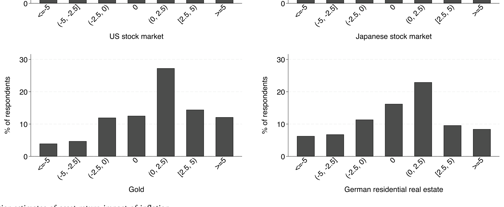
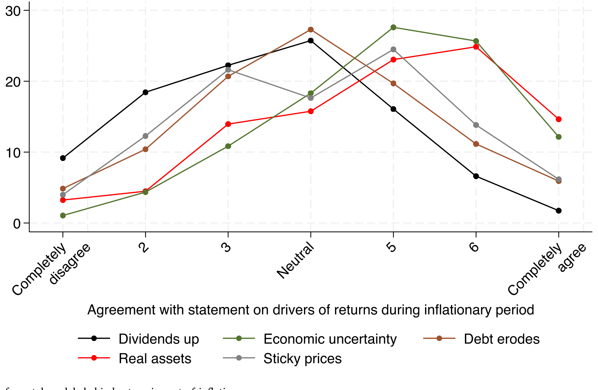
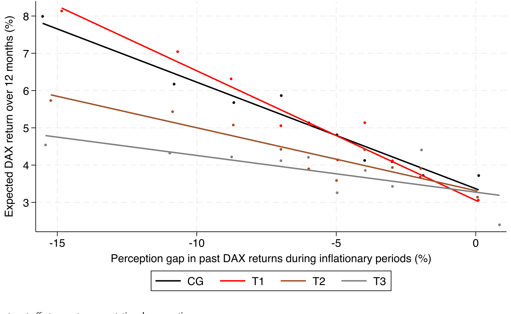
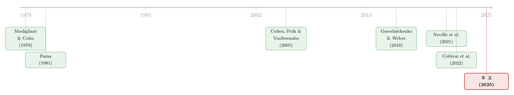

通胀来了，股票是「真资产」还是「纸面财富」？——一场把信念拆开给你看的实验
本文读的是 Schnorpfeil, Weber & Hackethal (2025, Journal of Financial Economics)：在德国通胀冲上 30 年新高的 2022 年初，作者把一场随机信息实验扣在了真实的券商交易数据上。结论出人意料——投资者对「通胀本身是高是低」的预期，几乎不影响他们对股票的回报预期；真正起作用的，是他们心里那条「通胀到底会把股票回报带向何方」的信念。而这条信念，平均而言太乐观了，纠正它，能一路传导到真金白银的买卖。
1 一个被默认的「常识」，和它的裂缝
先从一句几乎所有人都点头的话说起：股票是对实物资产 (real assets) 的索取权，因此长期来看，它应该能对冲通胀。物价涨一倍，企业的厂房、品牌、定价权也跟着涨，股东手里那张「凭证」的真实价值不该被通胀稀释。
这听上去天经地义。可问题是，数据并不买账。一个稳健到近乎尴尬的经验事实是：通胀与股票回报之间存在负相关。物价涨得越凶，股市当期表现往往越差。这与「股票是真资产」的朴素直觉直接冲突，几十年来逼出了一整片理论文献——货币幻觉 (money illusion)、名义现金流黏性 (sticky cash flows)、以及「通胀预示更紧的货币政策或更低的经济增长」等等，都试图替这条负相关找一个说得通的故事。
但作者点出了一个被长期忽略的空白：理论再多，我们其实几乎不知道普通投资者脑子里是怎么想这件事的。他们相信股票能对冲通胀吗？他们知不知道历史上通胀期股市其实很惨？这些信念又如何变成实际的买卖？直接的微观证据，少得可怜。
于是这篇论文要做的事就清楚了：把投资者关于「通胀—股票回报」的信念，一层层拆开、量出来、再用外生冲击去敲它，看哪一块松动了会传到交易上。
2 识别策略：一场嵌进交易账户的随机实验
要谈因果，就得有外生变异。作者的做法是一个标准的随机对照试验 (randomized controlled trial, RCT)，但它最锋利的地方，在于把实验结果对接到了合作银行的真实交易数据上——信念不只是问卷里的一个数字，而是能落到「这几个月他到底有没有买德国股票」的账户记录里。
实验在 2022 年 2 月进行，对象是某德国大型银行经纪业务的 2,843 名客户。这群人很关键：只有 21% 说自己依赖银行顾问做交易，63% 说做交易不和任何人商量——也就是说，他们大多是自主决策的投资者，信念到行为之间的传导链条比较「干净」，不太会被顾问或他人的意见过滤掉。
实验把人随机分进一个对照组和三个处理组，信息设计很讲究：
- 处理组 1 与 3：被告知当前通胀处于 30 年高位，并附上多条涨价原因。目的是外生地把通胀预期往上推。
- 处理组 2 与 3：被展示 1950 年以来历次通胀期内各类资产的真实年化回报。这些数字会戳破幻觉——德国股市年化只有
1%，而美国股市7%、日本11%、黄金15%、能源股6%。也就是说，本地通胀期里本地股票表现糟糕，国际股票和大宗商品则好得多。 - 处理组 3 还额外读到一小段「为什么」的叙事性解释（国际分散、能源股、黄金对冲等）。
这个 2×2 式的设计是全文的枢纽。因为处理 1（推高通胀预期）和处理 2（纠正回报信念）被正交地分开了，作者就能分别识别两条因果通道：一条是「你以为通胀会更高」带来的影响，另一条是「你意识到通胀期股票其实很惨」带来的影响。而处理组 3 把两者叠加，专门用来看交互效应——两种信念一起变，会不会产生额外的化学反应。
核心的因变量度量也设计得巧。作者没有直接问「你觉得通胀影响股票吗」，而是让受访者分别估计两个数字：某资产的「无条件历史平均回报」，以及它「在通胀期的历史平均回报」。两者之差，就是这位投资者主观认定的——
这个差值，就是本文反复盯住的那个「一个核心」：感知到的通胀回报冲击 (perceived return impact)。它不是通胀预期，也不是回报预期，而是连接两者的那块「信念中介」。
3 数据：在历史高点上按下的快门
样本期再怎么强调都不为过。2022 年 2 月，德国通胀从 2021 年的 2% 蹿到 5.3% 的 30 年高点，并在当年秋天冲破 11%。这意味着实验恰好打在一个通胀真实地、急剧地成为头等大事的窗口上——受访者不是在抽象地谈论一个遥远概念，而是在切肤之痛中作答。
银行向 42,000 名经纪客户发了邀请邮件，最终 2,843 人完成问卷，回应率 6.8%，中位答题时间 18 分钟。资产覆盖德国股市、德国能源股、美日股市、德国国债、大宗商品、黄金、德国住宅地产——之所以这样选，是为了同时捕捉「本地股票 vs. 受本地通胀影响较小的国际股票」「作为通胀成分的能源与商品」「公认的通胀对冲品黄金与地产」这几条对比线。
数据清洗上，作者剔除了答题过快（<7 分钟）或过慢（>90 分钟）约 2% 的样本，并对通胀与回报估计在 1% 尾部、以及落在 -10% 到 20% 区间外的回报估计做了截尾。
4 第一个发现：他们什么都懂，唯独看错了这一件事
接下来是全文最有张力的地方。
首先，这群投资者其实相当「博学」。他们对过去和当前通胀的判断、对各类资产无条件历史回报的估计，都相当准确，也普遍认为通胀是影响回报的重要因素。换句话说，你很难说他们是「信息匮乏」的小白。

Figure 2: Prior estimates of asset-return impact of inflation
但接着，一个自然的问题浮现了：既然无条件回报估得这么准，那他们对「通胀期」回报的判断呢？这里裂缝出现了——对通胀期德国股票回报的估计，普遍过于乐观，而且横截面上极度分散。只有少数投资者认为存在负的「股票—通胀」关系。许多人完全没意识到，国际分散化、投资能源股这类对冲通胀的策略是存在的。一群对无条件回报了如指掌的人，却在「通胀会把股票带向何方」这一件事上集体看错了方向。
这种「在别处很精明、唯独在此处系统性乐观」的反差，正是本文的题眼。它把矛头指向了投资者的主观心智模型 (mental models)——人们脑子里那套关于「通胀如何作用于股票」的因果叙事。
然后，作者去问这些心智模型长什么样。受访者在 7 点量表上对一系列学术理论表态。结果是：投资者最认同「通胀预示经济不确定性」以及「企业的实物资产能抵御货币侵蚀」；而最不认同的，恰恰是「通胀会抬高企业名义现金流」这条——这正与货币幻觉 (Cohen, Polk & Vuolteenaho, 2005) 的预言一致。更关键的是，对这条理论的支持程度，强烈地预测了一个人的回报信念。

Figure 4: Distribution of mental models behind return impact of inflation
到这里，逻辑链已经搭好了一半：心智模型 → 感知的通胀回报冲击 → 回报预期。问题只剩下——能不能从外面敲一下，看它真的传导吗？
5 真正关键的一步：哪条信念在「带电」？
这是全文的反转，也是它最漂亮的设计回报。
通胀信息处理（处理 1）确实奏效了：它把通胀预期平均推高了约 0.5 个百分点。按朴素直觉，通胀预期上去了，对股票的回报预期总该动一动吧？
然而，它纹丝不动。 提高通胀预期，对回报预期没有显著影响。作者层层验证这一点：通胀处理与「事前对通胀回报冲击的信念」之间的交互项不显著；在既学了通胀、又学了回报冲击的人当中，那些上调了通胀预期的人，其回报预期与没上调的人没有差别。作者的解读很到位：一旦家庭已经普遍担忧通胀（样本里几乎人人都预期高通胀），那个精确的通胀数字本身就没那么重要了 (Andrade et al., 2023; Pfäuti, 2024)。
这是对一类常见做法的直接警示：很多研究和政策沟通默认「调动通胀预期 → 改变资产配置」。但本文说，至少在通胀已成众矢之的时，这条通道几乎是断的。真正带电的，不是「通胀多高」，而是「通胀会对我的股票做什么」。
于是真正起作用的是另一条线。 关于通胀期历史回报的信息（处理 2），让投资者向下修正了对「股票—通胀关系」的感知：得知德国股市在通胀期年化仅 1% 后，他们对未来 12 个月德国股票回报的预期平均下调了 1 个百分点，信念分歧也随之收窄。这个效应在配上叙事性解释（处理 3）、以及在事前过于乐观的人身上更强——你越乐观，被真实数据打的脸越疼，修正越大。

Figure 6: Treatment effects on return expectations by perception gaps
6 落到真金白银：从信念到下单
如果故事到此为止，它仍只是「问卷里的数字变了」。本文最有分量的一击，是它真的落到了交易上。
在问卷内的假想投资任务（一笔 e10,000 的组合选择）里，学到真实回报的人调整了配置。但更硬的证据来自银行的实际交易记录：拿到「通胀期股票回报为负」这类信息的处理组，实际减少了股票买入。这一点尤其重要，因为它几乎排除了「实验者需求效应 (experimenter demand effects)」的担忧——人们总不会为了取悦一份匿名问卷，而在自己的真实账户里少买股票 (Haaland et al., 2023)。
传导的量级相当可观：外生地把对德国股市的回报预期压低 1 个百分点（大致就是基准处理效应的大小），会让实验后 2–4 个月内德国股票的净买入平均下降约 20%（相对于对照组的平均净买入）。从一句被纠正的信念，到几个月后账户里少下的几笔单，这条链路被完整地量了出来。
7 文献脉络：从「为什么负相关」到「投资者怎么想」
把这篇论文放回它生长的土壤，脉络就清晰了。
最早，是对「通胀—股票负相关」这一经验之谜的理论追问。Modigliani & Cohn (1979) 提出货币幻觉假说——投资者用名义利率去贴现实际现金流，从而在高通胀时系统性低估股票；Fama (1981) 则用「通胀代理了实际经济活动下滑」来解释。Cohen, Polk & Vuolteenaho (2005) 进一步在股市横截面里检验并支持了货币幻觉。这一支，研究的是总量数据里的规律与机制。

接着，宏观与行为金融合流，转向家庭主观信念是如何形成、又如何影响决策的。Gorodnichenko & Weber (2016) 把名义黏性与股市联系起来；Coibion, Gorodnichenko & Weber (2022) 等用信息提供实验研究通胀预期如何被塑造；Giglio et al. (2021) 用大样本刻画了信念与组合之间的「五个事实」。与此同时，Neville et al. (2021) 系统记录了通胀期各类资产的真实表现——这恰恰是本文处理信息的素材来源。
然后，叙事与心智模型成为新的关注点。Andre et al. (2022a) 显示，能想起更多通胀成因的人会预测更高通胀，叙事会改变预期；Shiller (2017) 的「叙事经济学」也是同一脉络。
这篇论文的位置，正是把上面三条线拧在一起：它不满足于总量相关，也不停留在问卷预期，而是直接测量投资者关于「通胀回报冲击」的信念与心智模型，外生地敲动它，再用真实交易验证传导。它与 Braggion et al. (2023) 用 1920 年代德国恶性通胀史料的工作互补——后者看行为，前者看「行为背后的那条信念」。
（关于「嘴上说的预期」与「手上实际行为」之间的落差，本博客也聊过另一个角度，见《嘴上说的预期，藏不住手上的外推》；而把投资者预期拆成不同维度去解释行为，可参见《机构到底信什么？》。）
8 评论与延伸（Q&A + 研究方向）
(a) 几个可能的疑问
Q：德国样本、又是「出了名怕通胀」的德国人，结论还能外推吗？
这是作者自己最先承认的软肋。但他们给了两条辩护：其一，正因为德国人对通胀格外敏感、又是博学的经纪客户，你先验上会以为他们最懂通胀的回报效应，可结果他们平均仍然过于乐观——这反而让「投资者系统性看错」的结论更强而非更弱；其二，Weber et al. (2025) 发现德国家庭对通胀信息的反应方式与美国及其他欧洲国家相似。所以「投资者如何思考并回应通胀」这一层，外推性大概是可以的；但具体的乐观程度未必能照搬。
Q：「感知的通胀回报冲击」和「通胀预期」到底差在哪？为什么要费劲分开？
这正是本文的核心区分。通胀预期是「未来物价会涨多少」的一个标量；感知的回报冲击是「通胀会把某资产的回报推高还是压低」的一个关系信念。本文最反直觉的发现恰恰是：前者动了不传导，后者动了才传导。把两者混为一谈，就会错判政策与沟通该往哪儿使劲。
Q：交易上的反应，会不会只是「实验者需求效应」——受访者猜到了实验意图、配合演出？
这正是用真实交易数据的价值所在。假想问卷里的配合可以是廉价的表演，但在自己的真实账户里、在实验结束后的 2–4 个月里持续少买德国股票，代价是真实的。需求效应很难解释这种延迟的、有成本的行为改变 (Haaland et al., 2023)。
Q：把「通胀」和「真实回报」两条信息一起给处理组 3，岂不是分不清是谁起的作用？
作者用正交设计化解了这点：处理组 2 只给回报信息、不给通胀信息，可单独识别回报通道；而处理组 1 只给通胀信息，结果对回报预期无影响。所以即便组 3 把两者叠加，也能反推出「起作用的是回报信息那一支」。叙事解释（组 3 独有）的增量效应则单独识别为「让处理更有效」。
Q：投资者「下调股票预期」之后，钱去哪了？是不是转向了黄金这类对冲品？
论文确实发现处理对其他资产预期有「合理」的外溢——比如对历史高回报的黄金，预期相应上调。这与「投资者在重新校准整张通胀对冲地图」是一致的。但本文的主战场和最干净的因果，仍落在德国股票的净买入上；跨资产的实际再配置是一个自然但更难识别的后续问题。
Q：这是不是说投资者「非理性」？
更准确的说法是「心智模型有偏」。投资者并非随机犯错，而是系统性地低估了「通胀期股票表现差」这一历史规律，且这种偏差与他们对货币幻觉类理论的（不）认同高度相关。一旦给了准确的历史数据，他们会贝叶斯式地、有方向地更新——这恰恰是理性学习的特征，只是先验错了。
(b) 几个可能的研究问题与提案
1. 把同一套「感知回报冲击」框架搬到公司债与信用利差上。 【经济故事】通胀对债券的负面冲击比对股票更「无处可藏」(Neville et al., 2021)。投资者是否也对「通胀期信用债回报」抱有系统性偏误？尤其是高收益债，其票息的名义/实际之辨更微妙。 【可行性】中。需要一份带固收持仓的零售或机构问卷，配合交易数据。识别上可复用本文的回报信息处理设计；难点在于信用债零售参与度低、样本稀薄。
2. 外资持有人的「通胀回报冲击」信念是否不同，进而影响其对本地债市的配置？ 【经济故事】本文揭示「本地通胀打压本地股票、国际资产相对受益」是许多本地投资者的盲点。反过来，持有美国公司债的外国投资者，对「美国通胀如何影响美元信用资产」的信念，可能系统性区别于美国本土投资者，并解释外资在通胀周期中的进出。 【可行性】中偏低。理想数据是分国别的持有人层面持仓（如 TIC 配合券商数据），识别外生信念冲击较难；但可先用跨国问卷做描述性证据。
3. 信息处理的「半衰期」：被纠正的信念能维持多久，交易效应会不会回潮？ 【经济故事】本文测到 2–4 个月的交易效应，但信念修正是否持久、会不会被后续新闻冲刷掉，关系到这类沟通的政策价值。 【可行性】高。本文已有交易面板数据，延长观测窗口、加事件时间分析即可，是最直接的后续。
4. 把「叙事解释」单独做成处理维度，量化叙事相对纯数据的增量价值。
【经济故事】处理组 3 显示叙事让信息更有效，但叙事与数据是捆绑给的。一个纯数据 vs. 纯叙事 vs. 二者结合的 2×2，能干净地分离「事实」与「故事」各自的说服力 (Shiller, 2017; Andre et al., 2022a)。
【可行性】高。标准 RCT 扩展，设计上完全可行，唯需新一轮实地实验。
5. 流动性视角：被纠正信念的投资者减少买入，是否在通胀冲击期加剧了某类资产的流动性压力？ 【经济故事】若大量自主投资者因同向的信念更新而同时减少某类股票买入，可能放大成交与价格压力。把微观信念冲击聚合到市场流动性，是行为金融与市场微观结构的交叉口。 【可行性】低。需要把个体信念冲击聚合到市场层面并识别其对流动性的因果影响，外生性与聚合都很难，目前更像是一个理论假说。
9 我的判断
这篇论文的贡献，在我看来不在于「又发现投资者犯了一个错」，而在于它精准地定位了错在哪一块、并证明只有那一块通电。把「通胀预期」与「感知的通胀回报冲击」干净地分开，再用正交的信息处理分别敲击，最后用真实交易数据收尾——这是一条难得完整的「信念 → 行为」因果链。尤其「提高通胀预期不传导、纠正回报信念才传导」这个反直觉结论，对宏观沟通和投资者教育都有直接含义：央行反复强调通胀数字，未必能改变人们的资产选择；让人们看清「历史上通胀期股票其实很惨」，反而立竿见影。
担忧也诚实地摆在那里。其一是外部效度：德国、单一银行的自主经纪客户、又是一个通胀急升的特殊窗口，三者叠加，使「平均过于乐观」这个具体数值很难直接外推，尽管定性机制大概率稳健。其二是单一信息内容：处理只展示了通胀期的平均回报，掩盖了各通胀期之间的巨大差异；若展示回报的波动，可能同时冲击二阶矩信念，效应方向未必一致——作者坦承了这一点。其三，交易效应虽显著且有量级，但 2–4 个月窗口之外是否持续、会不会反弹，仍是开放问题。
后续我最想看到两样东西：一是把这套框架推到固收与信用市场——那里通胀的杀伤更直接、对冲更无处可藏，投资者的盲点可能更深；二是更长窗口的交易追踪，看看被纠正的信念，究竟是改变了一次下单，还是真的重写了一个人对通胀的「心智地图」。
参考文献
- Andrade, P., Gautier, E., Mengus, E. (2023). What matters in households' inflation expectations? Journal of Monetary Economics 138, 50–68.
- Braggion, F., et al. (2023). Investor behavior under inflation: Evidence from the German hyperinflation. (Working paper / cited in text).
- Cohen, R.B., Polk, C., Vuolteenaho, T. (2005). Money illusion in the stock market: The Modigliani-Cohn hypothesis. Quarterly Journal of Economics 120(2), 639–668.
- Coibion, O., Gorodnichenko, Y., Weber, M. (2022). Monetary policy communications and their effects on household inflation expectations. Journal of Political Economy 130(6), 1537–1584.
- Fama, E.F. (1981). Stock returns, real activity, inflation, and money. American Economic Review 71(4), 545–565.
- Giglio, S., Maggiori, M., Stroebel, J., Utkus, S. (2021). Five facts about beliefs and portfolios. American Economic Review 111(5), 1481–1522.
- Gorodnichenko, Y., Weber, M. (2016). Are sticky prices costly? Evidence from the stock market. American Economic Review 106(1), 165–199.
- Haaland, I., Roth, C., Wohlfart, J. (2023). Designing information provision experiments. Journal of Economic Literature 61(1), 3–40.
- Modigliani, F., Cohn, R.A. (1979). Inflation, rational valuation and the market. Financial Analysts Journal.
- Neville, H., Draaisma, T., Funnell, B., Harvey, C.R., Van Hemert, O. (2021). The best strategies for inflationary times. Journal of Portfolio Management 47(8), 8–37.
- Pfäuti, O. (2024). Inflation – who cares? Monetary policy in times of low inflation. (Working paper).
- Shiller, R.J. (2017). Narrative economics. American Economic Review 107(4), 967–1004.
- Weber, M., et al. (2025). Tell me something I don't already know: Learning in low- and high-inflation settings. Econometrica 93(1), 229–264.